ЛР2. Простой сайт на Django
Цель работы
Овладеть практическими навыками и умениями реализации web-сервисов средствами Django.
Программное обеспечение: Python 3.12, Django 6, PostgreSQL.
Задачи
Реализовать сайт, используя фреймворк Django, паттерн MVC, технологию шаблонизации Jinja2 и СУБД PostgreSQL, в соответствии с вариантом и техническим заданием. Вариант определяется по порядковому номеру в журнале группы.
Быстрый старт
Для запуска нужен Python 3.12 и установленные зависимости Django, python-dotenv и uuid6.
В PowerShell выполните команды из папки проекта:
cd students\k3341\laboratory_works\Danilova_Ayaana\laboratory_work_2
python -m venv .venv
.\.venv\Scripts\Activate.ps1
python -m pip install Django python-dotenv uuid6
python manage.py migrate
python manage.py createsuperuser
python manage.py runserver
Сайт будет доступен по адресу http://127.0.0.1:8000/, панель управления — по адресу http://127.0.0.1:8000/admin/.
Если переменная DB_NAME не задана, приложение использует SQLite. Для подключения PostgreSQL параметры базы данных можно указать в файле .env (DB_NAME, DB_USER, DB_PASSWORD, DB_HOST, DB_PORT и при необходимости DB_ENGINE).
Пояснение архитектуры и структуры
Проект разделён на конфигурацию Django и приложение flights:
config/settings.pyсодержит настройки проекта, подключение приложения, пользовательской модели и базы данных.config/urls.pyподключает административную панель, страницы входа и маршруты приложения.flights/models.pyописывает данные и связи между ними.flights/forms.pyпроверяет и отображает формы.flights/views.pyобрабатывает запросы и формирует страницы.flights/selectors.pyсобирает запросы на чтение и заранее загружает связанные записи.flights/services.pyвыполняет операции изменения данных, например создание брони и билетов.flights/admin.pyнастраивает управление данными через Django Admin.templates/содержит HTML-страницы.flights/migrations/хранит изменения структуры базы данных.
Основные модели:
User— учётная запись пользователя.PassengerиPassport— пассажир и его паспортные данные.Flight— рейс, его время, тип, гейт и вместимость.Reservation— заказ пользователя на рейс.Ticket— билет пассажира с номером места и данными регистрации.Review— отзыв о рейсе.
Для идентификаторов используется UUIDv7. Связи с важными записями настроены с on_delete=PROTECT, чтобы нельзя было случайно удалить рейс, пользователя или пассажира, если с ними связаны билеты и история. Ограничения CheckConstraint и UniqueConstraint защищают данные на уровне базы: например, время прибытия должно быть позже времени отправления, место должно быть допустимым, а два билета не могут занять одно место на одном рейсе.
При бронировании сервис открывает транзакцию и блокирует строку выбранного рейса через select_for_update(). Он проверяет, что пассажиры принадлежат пользователю, имеют действующий паспорт и ещё не записаны на этот рейс, после чего назначает свободные места. Это помогает не продать одно место двум пассажирам при одновременных запросах.
Для уменьшения числа запросов к базе данных селекторы используют select_related() для связей «один к одному» и «многие к одному», а prefetch_related() — для связанных списков билетов и паспортов. Списки рейсов и бронирований выводятся постранично.
Ход работы
1. Уточнение требований
На первом этапе предложенные практики проектирования были сопоставлены с существующими моделями. Был рассмотрен вопрос: следует ли добавлять цену и статус билета, которых нет в текущей структуре, и заменять первичные ключи. Было решено не вводить новые бизнес-поля без заданных значений и правил. В итоговой версии проекта для идентификаторов используются UUIDv7.
2. Проверка структуры данных
Затем были изучены связи между пользователем, пассажиром, паспортом, рейсом, бронированием и билетом. Было установлено, что бронь связывает покупателя с рейсом, а пассажиры и места указываются в отдельных билетах. Поэтому список пассажиров рейса формируется по билетам, а не по прямой связи с бронью.
3. Защита целостности
Далее был рассмотрен вопрос, достаточно ли проверок формы для защиты данных. Таких проверок недостаточно: массовые операции и параллельные запросы могут их обходить. Поэтому правила дополнительно закреплены ограничениями базы данных: проверяются время рейса, рейтинг, диапазон места, а также уникальность места и пассажира на одном рейсе. Для важных связей установлен PROTECT, чтобы сохранять историю.
4. Разделение чтения и записи
Чтобы логика не скапливалась во views и моделях, операции чтения были вынесены в selectors.py, а операции записи — в services.py. В сервисном слое сосредоточены создание брони, обработка билетов и транзакционные действия.
5. Защита бронирования от одновременных запросов
При рассмотрении сценария «осталось одно место, поступают одновременные запросы на бронирование» было установлено, что простой проверки свободных мест недостаточно. В сервисе рейс блокируется внутри транзакции, после чего занятость мест проверяется повторно. Бронь и билеты создаются только при наличии свободных мест; в противном случае операция отменяется без сохранения частичной брони.
6. Проверка производительности и интерфейса
Затем была проверена загрузка связанных данных. Для связанных объектов применяются select_related() и prefetch_related(), а для часто используемых запросов предусмотрены индексы. Через формы и шаблоны реализованы регистрация, добавление пассажиров, бронирование мест и просмотр бронирований.
7. Запуск проекта
Для запуска проекта устанавливаются зависимости, применяются миграции и выполняется команда python manage.py runserver. Если подключение к базе данных не задано через .env, используется SQLite. Для PostgreSQL параметры подключения указываются в переменных окружения.
Скриншоты работы приложения
Гостевой режим
Рисунок 1 — Табло рейсов с пагинацией
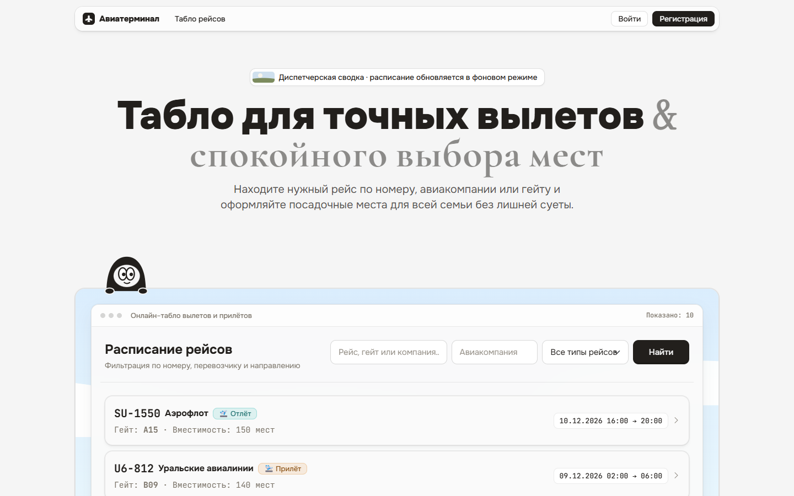
Рисунок 2 — Поиск и фильтрация рейсов
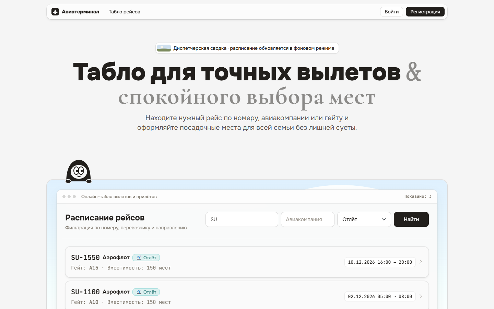
Рисунок 3 — Форма регистрации пользователя
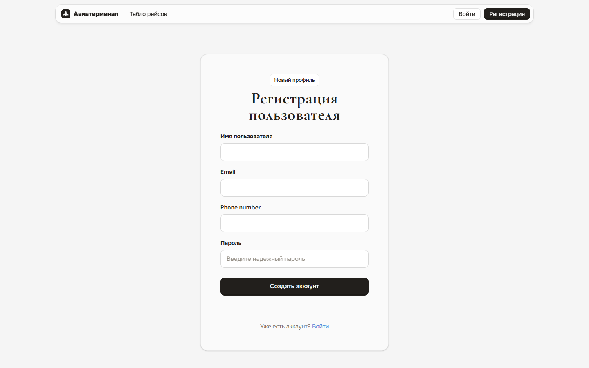
Клиент
Рисунок 4 — Страница рейса SU-1024
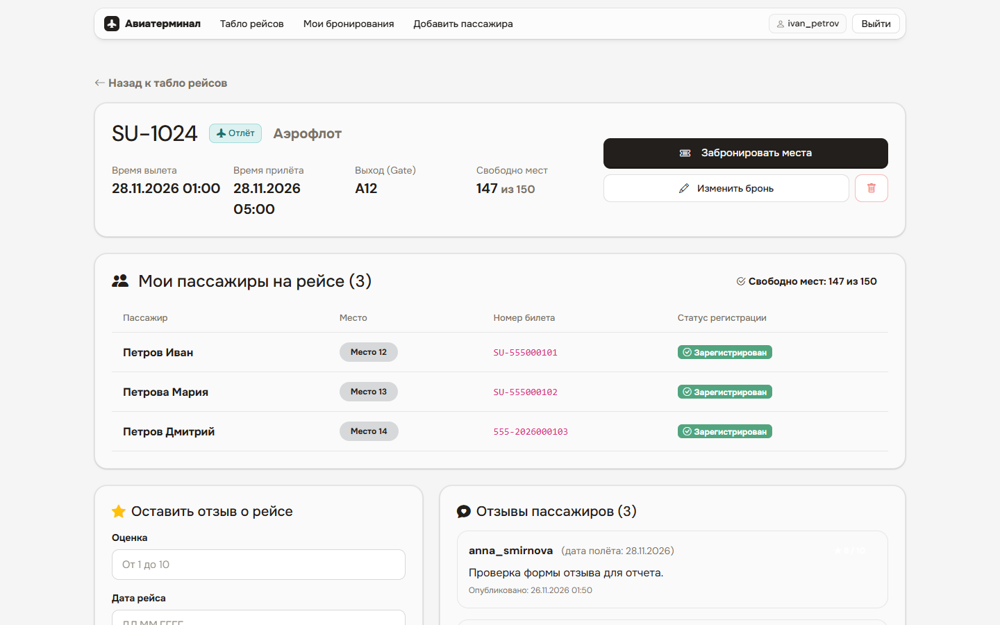
Рисунок 5 — Бронирования клиента
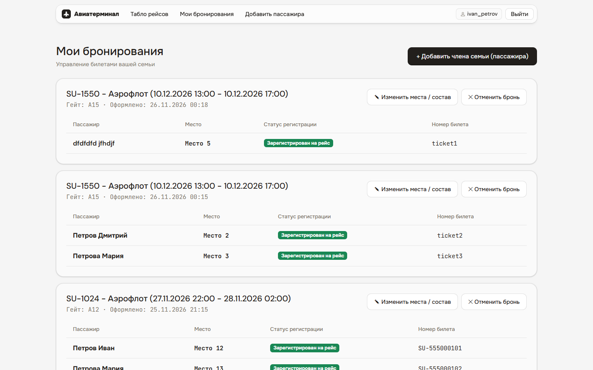
Рисунок 6 — Изменение мест в бронировании
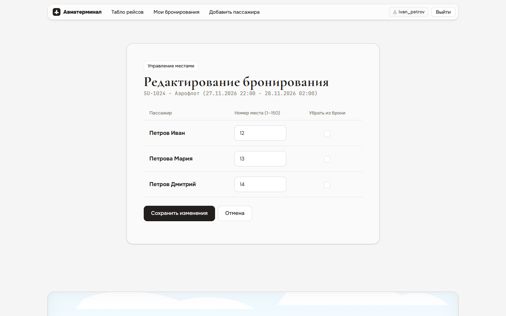
Сотрудник аэропорта
Рисунок 7 — Регистрация пассажиров на рейс
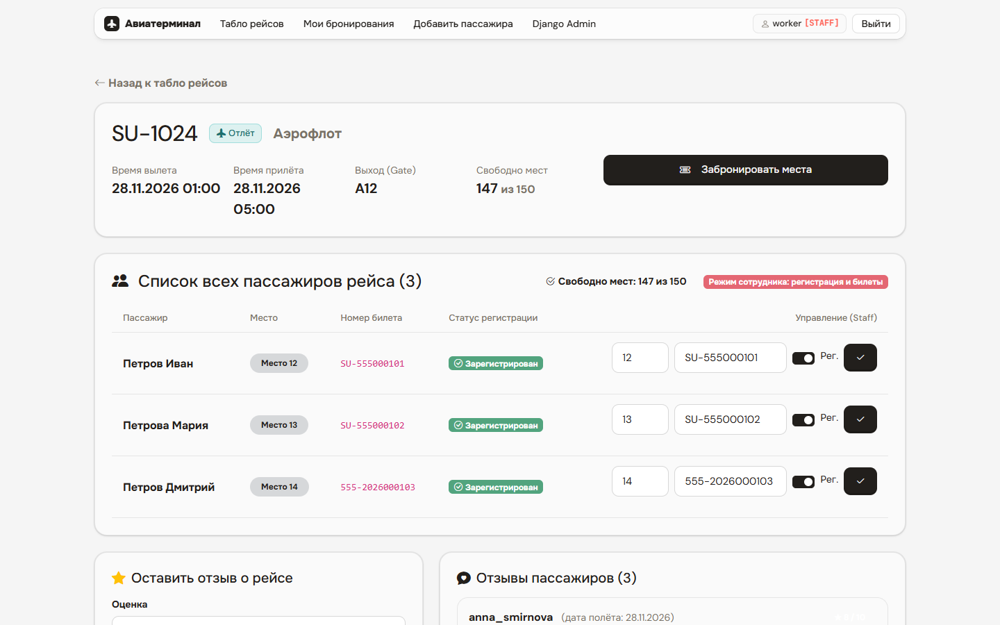
Django Admin
Рисунок 8 — Список билетов в Django Admin
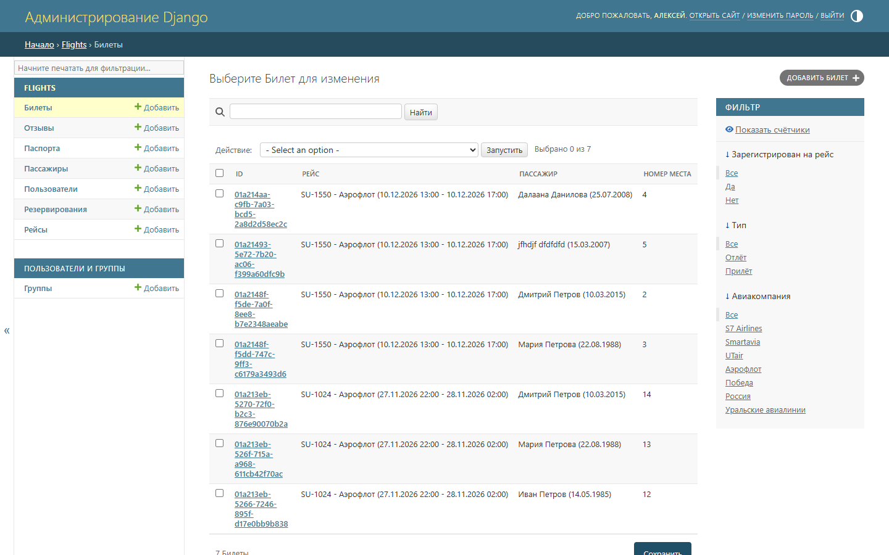
Вывод
В ходе лабораторной работы было разработано веб-приложение на Django для просмотра расписания авиарейсов и бронирования билетов. В системе реализованы регистрация и авторизация пользователей, поиск и фильтрация рейсов с пагинацией, полный цикл управления бронированиями (создание, изменение мест, отмена), публикация отзывов, а также разграничение прав доступа между клиентами и сотрудниками аэропорта как в клиентском интерфейсе, так и в панели Django Admin.
Разделение логики на слои чтения (selectors.py) и записи (services.py), оптимизация запросов через select_related() и prefetch_related(), а также использование транзакционных блокировок и ограничений на уровне базы данных позволили избежать дублирования кода и гарантировать целостность данных при параллельном бронировании мест.
Выполненные 4 задачи на литкод за просрочку дедлайна по работу:
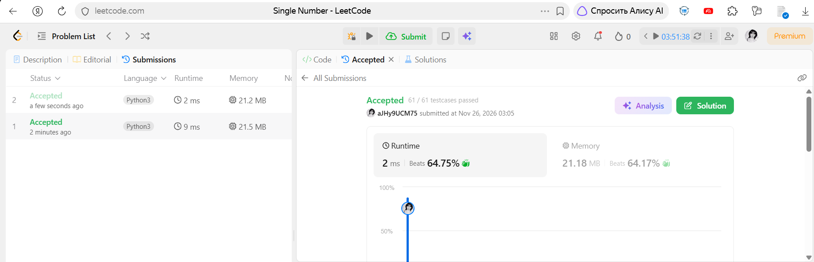
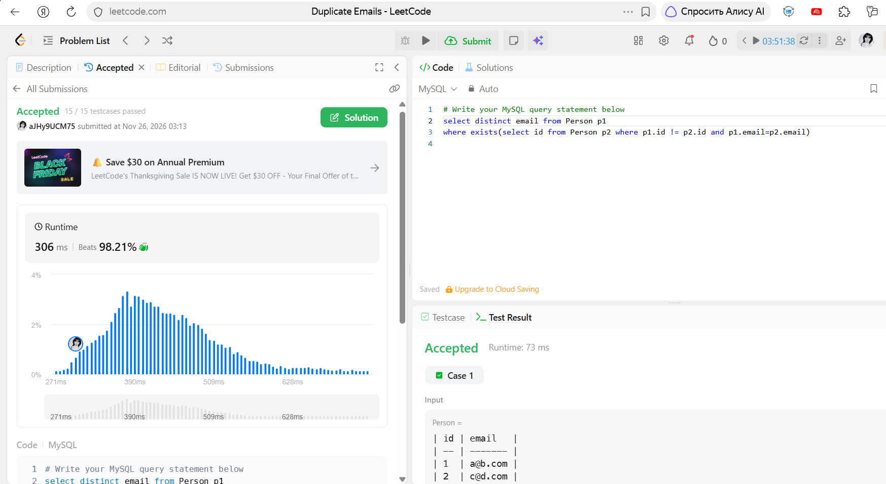
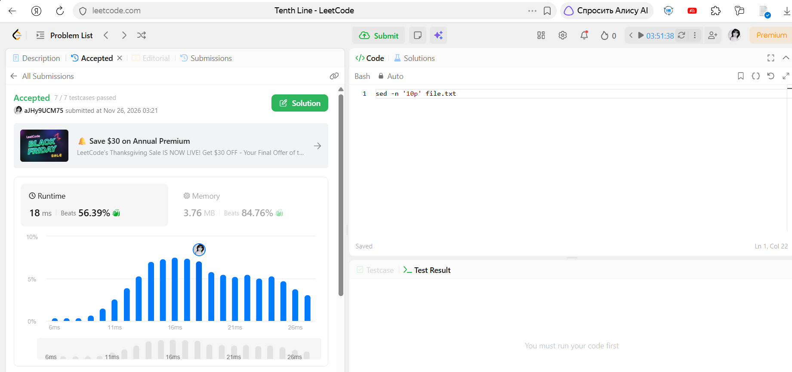
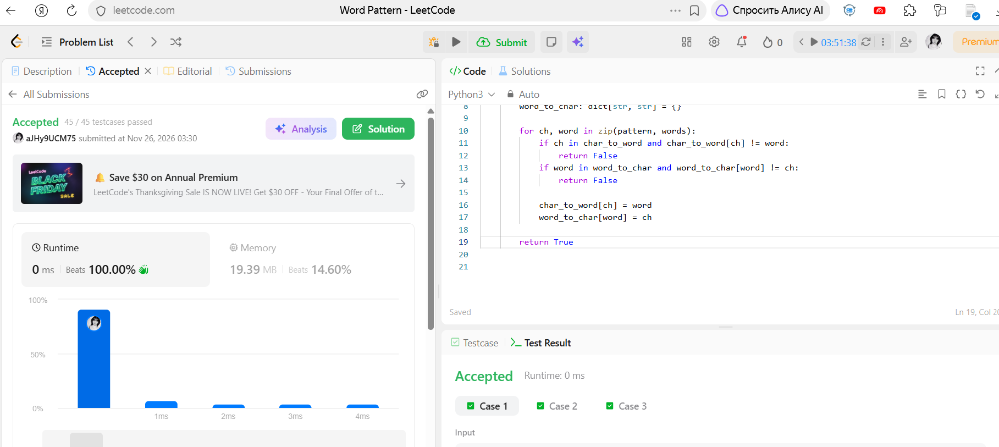